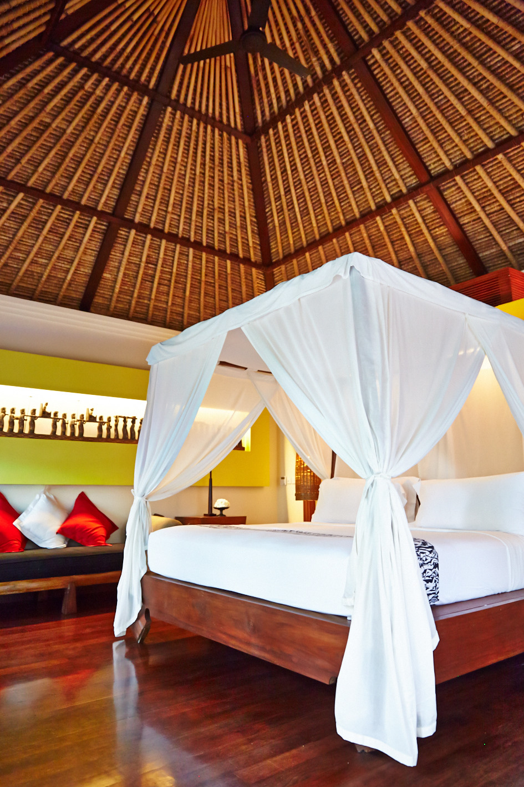

<div class="container project-view">
    
	<div class="row">
        <div class="col-md-8 project-images">
            
            
            
            
            
            
            
            
            
            
            
            
            
            
            
            
            
            
            
            
            
            
            
		</div>
        <div class="col-md-4">
            <div class="project-info">
                <h2>Maya Ubud Resort And Spa</h2>

                <div class="details">
                    <!-- <div class="info-text">
                        <span class="title">Date</span>
                        <span class="val">March 2014</span>
                    </div> -->

                    <div class="info-text">
                        <span class="title">Location</span>
                        <span class="val">Bali</span>
                    </div>

                    <div class="info-text">
                        <span class="title">Category</span>
                        <span class="val">Luxury Wedding</span>
                    </div>
                </div>

				Scattered across 10-hectares of tropical landscape featuring a hidden river valley, Maya Ubud is a luxury resort designed to capture the spirit of a traditional Balinese village. With a collection of stylish rooms and private villas, the property combines local elegance with gracious hospitality for memorable five-star experience.
				<br/><br/>
				The nearby village of Ubud lends itself to shopping and dining possibilities, as well as cultural sites of interest.


            </div>
        </div>
    </div>
</div>